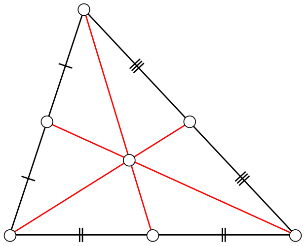
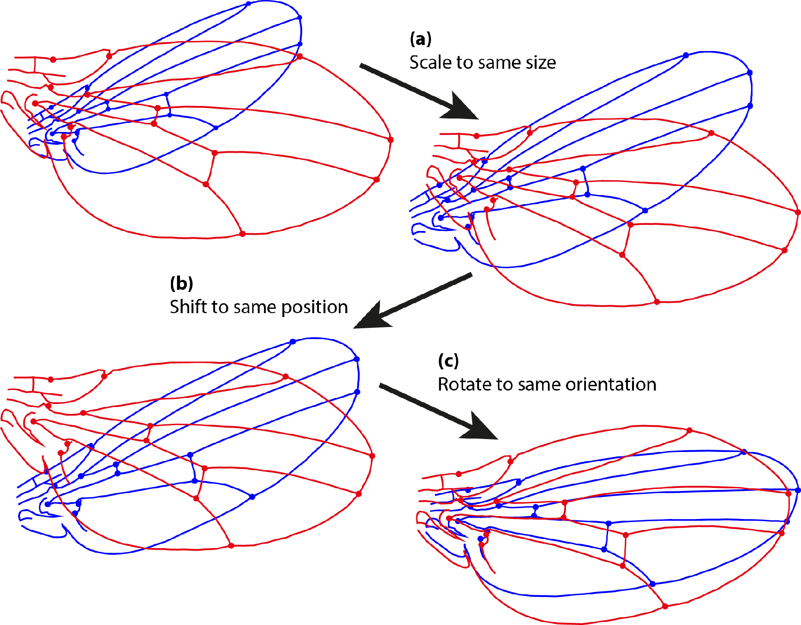
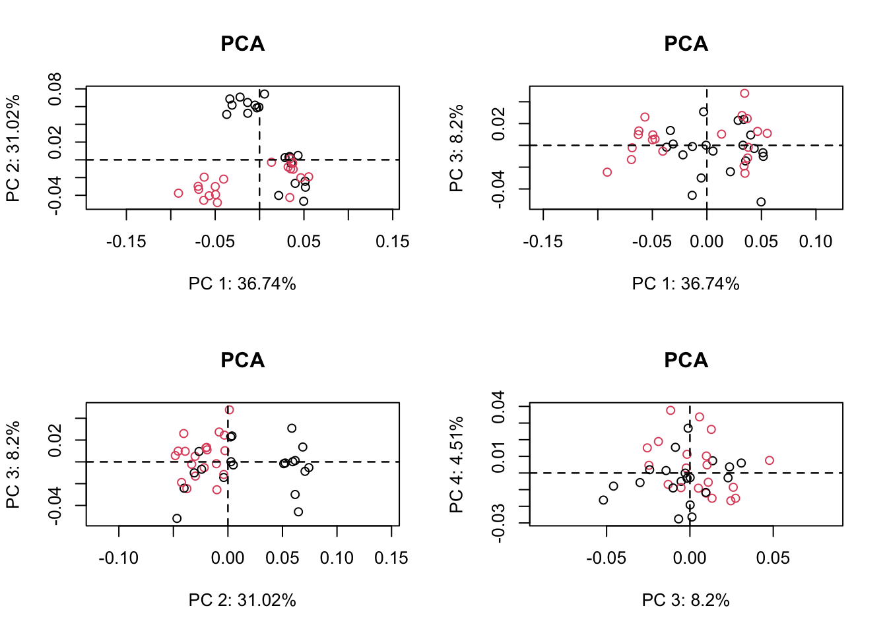

The ultimate goals for any geometric morphometric analysis - to define a mathematical space in which we can compare sets of landmark configurations that (1) ordinates shapes on the basis of their similarity, (2) treats these configurations as a whole entity rather than an accumulation of independent parts, (3) respects the conventions of the Kendall shape space, (4) supports shape modelling, and (5) is stable in the face of minor changes to the sample and/or reference shape.
What is a Kendall shape space, you ask? A shape space or coordinate system is used to describes shapes, and importantly, be used to understand differences between shapes. Kendallʻs shape space describes curves and local approxmation to curves using tangents Klingenberg (2020). For this lesson just remember that shapes are connected by geometries, which we can describe mathematically. This makes it much easier to compare the major differences between multidimensional shapes.
Size Adjustment with Procrustes Superimposition
Procrustes superimposition is the most widely used method to create size and shape variables from landmark data. The basic idea is that larger objects should have landmarks that are farther apart than the same landmarks in smaller objects.
Centroid
A key concept is the centroid, which the center point of all of the landmarks. It is easily calculated for each specimen by taking the average of all of the landmark coordinates along each axis. For p landmarks in two dimensions the coordinates of the centroid would be:
The concept of centroid size describes geometric size. It is calculated from the distances of each landmark from the centroid, but it is a geometric mean because it is caculated by taking the square-root of the sums of squared distances of each landmark from the centroid.

The centroid of a triangle (with landmarks at the vertices) is the point in the center.
[Source: Wikipedia]
Shape Variables
Shape variables calculated from Procrustes superimposition mathematically separate scale (size) from shape by applying shape-preserving transformations to make the landmarks as similar as possible.
The concept: In order to compare differences in shape, we can remove size (in other words, normalize by size or bring all of the specimens to the same size) with the following transformations:
Scale: Bring each set of landmarks to the same size by magnifing or reducing the distances of the landmarks around their centroid.
Translate: Shift the landmarks in the coordinate space to place the centroids at a common point.
Rotate: Rotate the landmarks with an angular transformation to bring them into a common orientation.
At the end of Procrustes superimposition, the landmarks for the different specimens will be scaled to the same size and their coordinates will lie as close together as possible while preserving the differences in shape. The figure below illustrates these steps.
The mathematics of these transofrmations come from basic linear algebra operations on matrices, which are beyond the scope of the class, but to understand what is happening we can analogize it to univariate arithmetic.
Scaling is like dividing each variable by a size variable to put all of the individuals on the same baseline with regard to size (magnitude).
Translation brings the centers of all of the landmarks into alignment. Think of a situation where we measured the length of specimens according to wherever they fell within the picture frame, for example if one specimen started at 2 and extended to 10, and another started at 6 and extended to 12. We could translate (or slide) each of these to place their midpoint at zero by subtracting the mean value from each of their endpoints. For the first specimen, we would subtract 6, translating the specimen from (2,10) to (-4,4), and for the second we would subtract 9, tanslating the specimen from (6,12) to (-3,3).
Rotation is an angular rotation to bring a 2 or 3D object into a common orientation. For a more thorough discussion please see (Zelditch, Swiderski, and Sheets 2012).

Figure: Procrustes superimposition. The figure shows the three transformation steps of an ordinary Procrustes fit for two configurations of landmarks. (a) Scaling of both configurations to the same size; (b) Translation to the same position of the center of gravity; (c) Rotation to the orientation that provides the minimum sum of squared distances between corresponding landmarks.
GPA translates all specimens to the origin, scales them to unit-centroid size, and optimally rotates them (using a least-squares criterion) until the coordinates of corresponding points align as closely as possible. The resulting aligned Procrustes coordinates represent the shape of each specimen, and are found in a curved space related to Kendall’s shape space (Kendall 1984). Typically, these are projected into a linear tangent space yielding Kendall’s tangent space coordinates (i.e., Procrustes shape variables), which are used for subsequent multivariate analyses (Dryden and Mardia 1993, Rohlf 1999).
Geomorph Package
Data Structures
The package geomorph is written to work with standard geomorphic morphometrics data file types such as TPS and NTS, as well as others Baken et al. (2021).
readland.tps() reads morphometric data in TPS format. It returns an array for storing landmark data: p landmarks X k dimensions X N specimens
The third dimension of this array contains names for each specimen, which are obtained from the image names in the .tps file.
Built-in Example
Letʻs look again at the built-in dataset plethodon that comes with geomorph. It has skull landmark data for 40 specimens of two species of plethdon salamanders (Dean C. Adams 2004).
The landmarks are in plethodon$land. There are twenty of each species, and from the dimensions of plethodon$land we see that each of the 40 specimens has 12 landmarks in two dimensions.
plotAllSpecimens plots the coordinates of all samples, so we can start to look at variation.
The summary provides the mean for each of the coordinates after GPA. We can see the mean of the coordinates among the individual coordinates by plotting:
Letʻs compare the plot of all specimens before and after Generalized Procrustes Analysis. The below plot is before GPA, on the raw landmarks plethodon$land:
Plotting again after alignment with Generalized Procrustes Analysis gives a good representation of shape variation. Plotting links between the landmarks helps with visualization.
Ordination type: Principal Component Analysis
Centering by OLS mean
Orthogonal projection of OLS residuals
Number of observations: 40
Number of vectors 20
Importance of Components:
Comp1 Comp2 Comp3 Comp4
Eigenvalues 0.001855441 0.001566597 0.0004141056 0.0002278444
Proportion of Variance 0.367433295 0.310233333 0.0820053761 0.0451200584
Cumulative Proportion 0.367433295 0.677666628 0.7596720044 0.8047920628
Comp5 Comp6 Comp7 Comp8
Eigenvalues 0.0001725997 0.0001672575 0.0001549008 0.0001251132
Proportion of Variance 0.0341799312 0.0331220169 0.0306750315 0.0247761773
Cumulative Proportion 0.8389719940 0.8720940109 0.9027690424 0.9275452197
Comp9 Comp10 Comp11 Comp12
Eigenvalues 8.468503e-05 6.869926e-05 5.430853e-05 4.423148e-05
Proportion of Variance 1.677019e-02 1.360452e-02 1.075473e-02 8.759165e-03
Cumulative Proportion 9.443154e-01 9.579199e-01 9.686747e-01 9.774338e-01
Comp13 Comp14 Comp15 Comp16
Eigenvalues 0.0000261742 0.0000192644 1.741769e-05 1.715141e-05
Proportion of Variance 0.0051832795 0.0038149309 3.449226e-03 3.396495e-03
Cumulative Proportion 0.9826170994 0.9864320303 9.898813e-01 9.932778e-01
Comp17 Comp18 Comp19 Comp20
Eigenvalues 1.555244e-05 9.253679e-06 5.336746e-06 3.802714e-06
Proportion of Variance 3.079853e-03 1.832507e-03 1.056837e-03 7.530520e-04
Cumulative Proportion 9.963576e-01 9.981901e-01 9.992469e-01 1.000000e+00
There are 20 PC axes, with 67% of the total shape variation in the first two axes. A plot on PC1 vs PC2 reveals several distinct clusters, suggesting shape differences. The scores are in pleth.pca$x. There is a plot method for geomorph pca results:
The specimens are from two species in two distinct environments, and there seems to be some separation between the points along PC1 vs. PC2. These points correspond to specimens of two different species in the original TPS data that information is in plethodon$species. Because the species names are a factor, we can use this to do a quick and dirty plot colored by species. We can plot additional PC axes by specifying the axes to plot:
par(mfrow=c(2,2))# set up 2x2 plotsplot(pleth.pca, main ="PCA", col=plethodon$species# color points by species)plot(pleth.pca, main ="PCA", axis1 =1, axis2 =3, # plot PC axes 1 vs 3 col=plethodon$species)plot(pleth.pca, main ="PCA", axis1 =2, axis2 =3, # PC 2 vs PC3 col=plethodon$species)plot(pleth.pca, main ="PCA", axis1 =3, axis2 =4, # PC3 vs PC4 col=plethodon$species)

All of the separation between species comes from PC1 vs. 2, with no additional separation by adding PC3 or PC4.
Statistical test for differences among species and sites
We can test the shape variables (GPA coordinates) as explanatory variables for phenotypic varation. Because there are multiple pheontypic (Y) variables, we use MANOVA (multivariate ANOVA).
geomorph has custom linear model functions that use randomized residuals (permutation test) to assess linear model fits on the high-dimensional geomorphic morphometric data Collyer and Adams (2021) (rather than assume the data come from a multivariate normal distribution).
Function
Description
procD.lm
Procrustes ANOVA/regression for Procrustes shape variables
procD.pgls
Phylogenetic version of procD.lm
geomorph has a helper function geomorph.data.frame that creates an object of class geomorph.data.frame from your procrustes shape coordinates that includes the centroid size (Csize), and allows you to associate your metadata such as species and site together with the shape data. The idea is keep it organized in a data-frame like manner, even though it is a list (it makes sure that all the elements have the same length).
Analysis of Variance, using Residual Randomization
Permutation procedure: Randomization of null model residuals
Number of permutations: 1000
Estimation method: Ordinary Least Squares
Sums of Squares and Cross-products: Type I
Effect sizes (Z) based on F distributions
Df SS MS Rsq F Z Pr(>F)
species 1 0.029258 0.029258 0.14856 14.544 4.2241 0.001 **
site 1 0.064375 0.064375 0.32688 32.000 5.2101 0.001 **
species:site 1 0.030885 0.030885 0.15682 15.352 5.4075 0.001 **
Residuals 36 0.072422 0.002012 0.36774
Total 39 0.196940
---
Signif. codes: 0 '***' 0.001 '**' 0.01 '*' 0.05 '.' 0.1 ' ' 1
Call: procD.lm(f1 = coords ~ species * site, data = gdf)
The MANOVA reveals significant shape differences between species, between sites, and in the interaction between the two factors (species and site).
We can also look at variation with centroid size:
anova(procD.lm(coords~Csize+species*site, data =gdf))
Analysis of Variance, using Residual Randomization
Permutation procedure: Randomization of null model residuals
Number of permutations: 1000
Estimation method: Ordinary Least Squares
Sums of Squares and Cross-products: Type I
Effect sizes (Z) based on F distributions
Df SS MS Rsq F Z Pr(>F)
Csize 1 0.010409 0.010409 0.05286 5.2986 2.8820 0.001 **
species 1 0.025661 0.025661 0.13030 13.0625 4.0712 0.001 **
site 1 0.063018 0.063018 0.31999 32.0780 5.3722 0.001 **
species:site 1 0.029093 0.029093 0.14773 14.8093 5.2418 0.001 **
Residuals 35 0.068758 0.001965 0.34913
Total 39 0.196940
---
Signif. codes: 0 '***' 0.001 '**' 0.01 '*' 0.05 '.' 0.1 ' ' 1
Call: procD.lm(f1 = coords ~ Csize + species * site, data = gdf)
There is signficant multivariate difference among the shape data by size as well as by species and site. This is a good place to note that while size and shape are mathematically uncorrelated by GPA, there could still be some biological variation that produces some pattern of shape variation with size.
Relative Warps
We can look at the relative shape change between the specimens. This is a common technique you will see in the literature using relative warps analysis. It uses a shape analysis technique called thin plate splines which is a smoothing method that is forced to go through the landmarks, but will fit a surface between them (in as many diemsions as there are in the data).
Relative warps analysis will show the shape deformation needed to move from a reference shape to a another shape.
First we calcuate the mean shape in all of the data as the reference shape.
We can see that most of the shape change between P. jordanii and the mean shape is around the jaw hinge (points 1,2) and top of the skull (post cranial, points 11,12). Compare to the sketch of the landmark coordinates.
Adams, D. C., M. L. Collyer, A. Kaliontzopoulou, and E. K. Baken. 2022. “Geomorph: Software for Geometric Morphometric Analyses. R Package Version 4.0.4.”https://cran.r-project.org/package=geomorph.
Adams, Dean C. 2004. “Character Displacement via Aggressive Interference in Appalachian Salamanders.”Ecology 85 (10): 2664–70. http://www.jstor.org/stable/3450422.
Baken, E. K., M. L. Collyer, A. Kaliontzopoulou, and D. C. Adams. 2021. “Geomorphic V4.0 and gmShiny: Enhanced Analytics and a New Graphical Interface for a Comprehensive Morphometric Experience.”Methods in Ecology and Evolution.
Bardua, C, R N Felice, A Watanabe, A -C Fabre, and A Goswami. 2019. “A Practical Guide to Sliding and Surface Semilandmarks in Morphometric Analyses.”Integrative Organismal Biology 1 (1). https://doi.org/10.1093/iob/obz016.
Collyer, M. L., and D. C. Adams. 2018. “RRPP: An r Package for Fitting Linear Models to High‐dimensional Data Using Residual Randomization.”Methods in Ecology and Evolution.
———. 2021. “RRPP: Linear Model Evaluation with Randomized Residuals in a Permutation Procedure, r Package Version 1.1.2.”https://cran.r-project.org/package=RRPP.
Kendall, David G. 1984. “Shape Manifolds, Procrustean Metrics, and Complex Projective Spaces.”Bulletin of the London Mathematical Society 16 (2): 81–121. https://doi.org/10.1112/blms/16.2.81.
Klingenberg, Christian Peter. 2020. “Walking on Kendall’s Shape Space: Understanding Shape Spaces and Their Coordinate Systems.”Evolutionary Biology 47 (4): 334–52. https://doi.org/10.1007/s11692-020-09513-x.
MacLeod, Norm. 2010. “PalaeoMath: Part 21 - Principal Warps, Relative Warps, and Procrustes PCA.” Newsletter 75. PaleoMath 101. The Paleontological Association.
Savriama, Yoland. 2018. “A Step-by-Step Guide for Geometric Morphometrics of Floral Symmetry.”Frontiers in Plant Science 9. https://doi.org/10.3389/fpls.2018.01433.
Webster, Mark, and H. David Sheets. 2010. “A Practical Introduction to Landmark-Based Geometric Morphometrics.”The Paleontological Society Papers 16: 163–88. https://doi.org/DOI: 10.1017/S1089332600001868.
Zelditch, Miriam Leah, Donald L. Swiderski, and H. David Sheets. 2012. Geometric Morphometrics for Biologists a Primer. Amsterdam ; Elsevier Academic Press.


{kind=link}